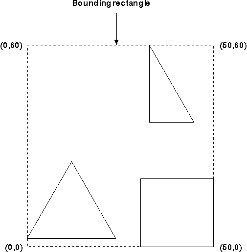

Boundary determination is an operation to compute the size of the smallest rectangle that encloses a graphics output in model space. One use of boundary determination is to enable you to repair only the affected parts of the screen, when a graphics object is moved, for example, or when a graphics object is changed some other way. Dynamic segments are not included in boundary-determination operations.
Boundary determination can be performed on both retained and nonretained graphics. In both instances, you request boundary data to be calculated by setting the boundary data flag (DCTL_BOUNDARY) in GpiSetDrawControl. If you do not set this flag (for example, if you do not want to collect boundary data unnecessarily) and later find that you need boundary data for a particular object, you can do the following:
If you are drawing retained graphics, each drawing request (GpiDrawSegment, GpiDrawFrom, and GpiDrawChain) causes the boundary data resulting from the drawing to be made available. The application must request this data explicitly by calling GpiQueryDeviceBitmapFormats after each drawing request for which it wants to examine boundary data. Boundary data is returned to the application in model space coordinates. The boundary data is reset before each retained drawing operation, so there is no risk of accumulating data from separate operations.
If you are drawing nonretained graphics, boundary data is accumulated for each GpiPutData and for each individual primitive drawing function. The application can request the accumulated boundary data at any time by calling GpiQueryBoundaryData. Data continues to accumulate unless you call the GpiResetBoundaryData; it is not reset automatically.
The boundary data returned to you is in the form of four model-space coordinates, which are the lowest (x,y) positions and the highest (x,y) positions of the bounding rectangle in model space as illustrated in the following figure. 
The Bounding Rectangle